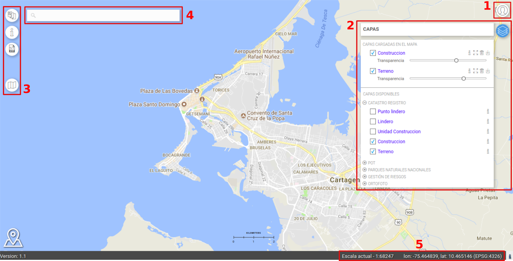

Visor Geográfico
Al abrirse, el Geoportal muestra como página inicial el Visor Geográfico, una aplicación web de mapas desarrollada para la navegación, visualización y análisis de la Información geográfica.
La interfaz del Visor Geográfico se presenta como en la figura en seguida:

Visor Geográfico
La aplicación presenta algunas características iniciales predefinidas por usuarios autorizados (por ejemplo Administrador) a través de la aplicación Panel de Administración: Mapa de fondo, Idioma, Sistema de coordenadas
La aplicación está constituida por los siguientes 5 grupos de componentes:
1. Barra de Accessibilidad
2. Panel de las Capas
3. Barra de Herramientas Básicas
4. Buscador
5. Información sobre el Mapa